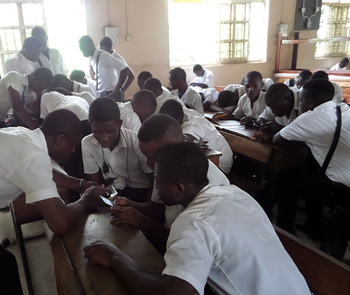
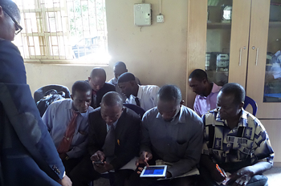
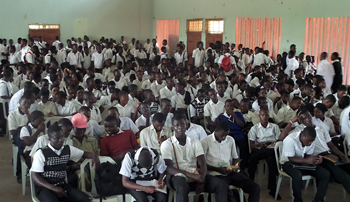
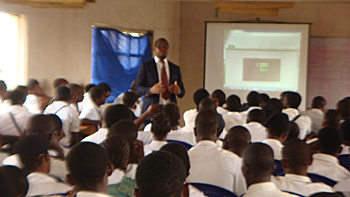

Community Servers
Delivering Content to african communities without Internet
As part of our dreams to make access to information ubiquitious, we identify and isolate communities we can support with a Server deployment, this includes rural schools and selected urban schools, Public Health centers, and various other communities with need for easily accessible information using the deployment option that Otomatik offers.
To accomplish this, we engage the public in supporting us acquire the Servers for the targetted communities.
There are 2 major kinds of communal projects we currently undertake.
1) EDUCATION PROJECT: For Education deployments, we deploy the Otomatik Server with our Examination practice portal (Examina) and a customized version of WorldPossible elibrary (Rachel), that enable students study and test/prepare for examinations without access to the Internet.
2) HEALTH PROJECT: We compile open-source Health Software including Medical Term Encyclopedia, Diseases and Symptoms web application, Medical Videos, First Aid Instructional videos, female Health materials e.t.c.)
However, we are also open to deploying the Servers for Communal projects not covered under the above, as long these have reaching impacts in the communities they are deployed in.
EDUCATION PROJECT 1: LAGOS STATE TECHNICAL COLLEGES SERVER DEPLOYMENTS
Having piloted the Otomatik scheme in two Technical colleges authorized by the Lagos State Government of Nigeria, we are ready to deploy the Otomatik Servers in the 5 State Owned Technical college as part of our first community development project.

GOAL: $1,930
RAISED: $1,150
GOAL: $1,930
RAISED: $100
GOAL: $1,930
RAISED: $0
GOAL: $1,930
RAISED: $0
GOAL: $1,930
RAISED: $0
UPDATE: RAISED N500,000
We have recently raised N500,000 ($1,050) as contribution for Setup in Agidingbi from the generous Ms Spencilene P. Benson, this should cover deployment costs, we are still looking forward to additional donations to cover maintenance. Thank you